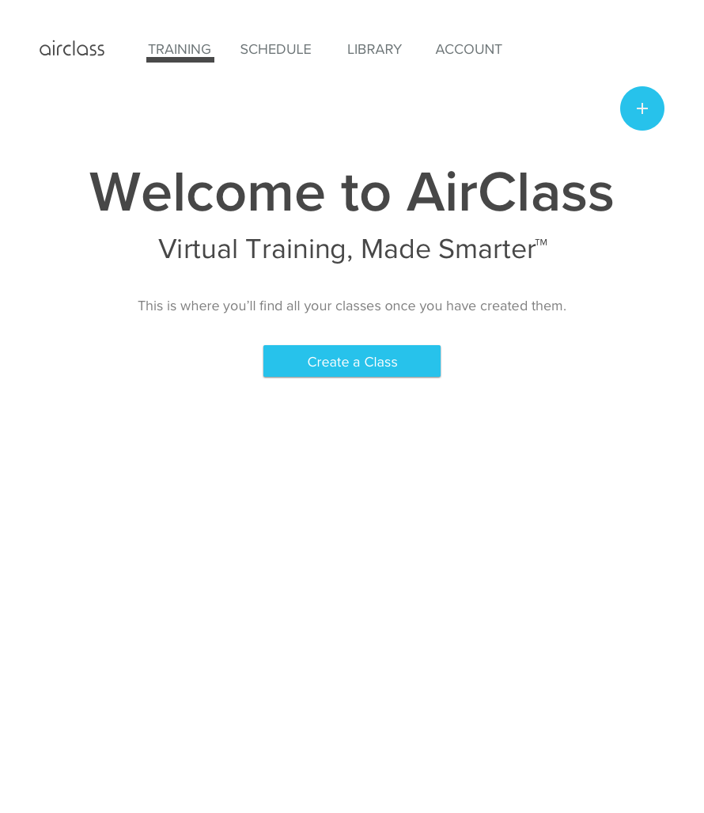
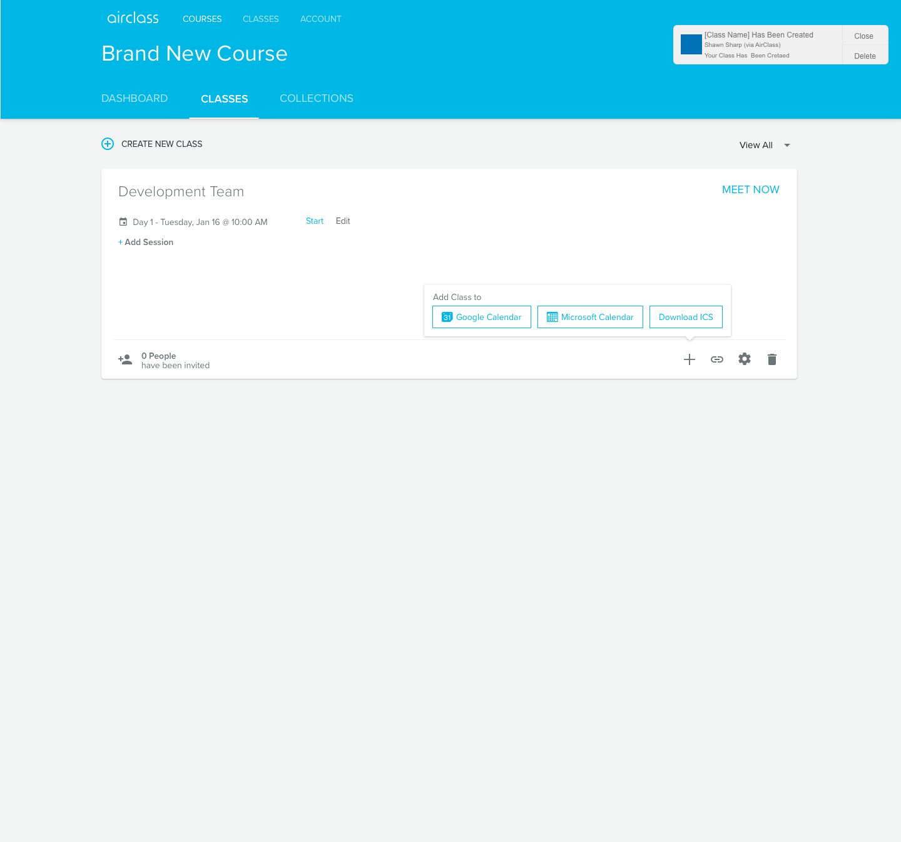
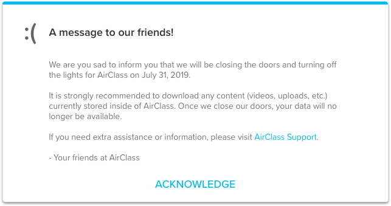

AirClass was developed with remote classrooms in mind with a mission to make better instructors. AirClass was a virtual classroom where corporate trainers could train remote teams. With the assistance of artificial intelligence an instructor could know if the audience was declining in engagement and if the topic needed to be changed or even repeated.
Increase user retention.
Keep up on feature enhancements and needs.
I was brought on to lead AirClass' User Experience, which had been running for a little while and designed by another member on my team. I primarily working with the product manager helping with any new feature requests and understanding the problems users were facing.
I had to keep up with the original brand and style with any new features, icons, and illustrations used in AirClass. This was carried all the way to the final days of AirClass.
AirClass was frequently getting feedback from users about the quality of audio in AirClass. We knew that a majority of the issues users were experiencing was caused by the poor network on their end. We started showing a banner for the poor audio, video, and even when something more catastrophic happened.
This was one of the first tests I was putting together to understand why users were not sticking around in the product. From our data, it looked as if the user would create their user account then never return. My hypotheses, from initial conversations with users, was that they didn't know what courses were and that they couldn't start a virtual class as quickly as they expected. In other words, our interface was too complicated.
I removed the concept of courses in my test and gave a simple call to action.
My initial findings were that this solved most of the problems but were quickly extinguished when we turned our attention to Airstack.
Feature request to add the calendar invite into their calendar tools. Users did not like having the agend in AirClass and preferred their calendar tools (Outlook or Google).
I got to help end the life of AirClass. I was primarily concerned with our interactions outside of the product (emails, invoices, etc) this was one of the small pieces of UI we built to let users know of the future. I truly believe a user's experience starts and ends outside of a product.

Copyright © 2021 All Rights Reserved | shawn@sharpinit.com